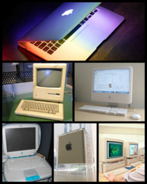

Macintosh
Macintosh, ou Mac, é o nome dos computadores pessoais fabricados e comercializados pela empresa Apple Inc. desde janeiro de 1984. O nome deriva de McIntosh, um tipo de maçã apreciado por Jef Raskin. O Apple Macintosh foi o primeiro computador pessoal a popularizar a interface gráfica, na época um desenvolvimento revolucionário. Ele é muito utilizado para o tratamento de vídeo, imagem e som.
Os primeiros modelos foram construídos em torno dos microprocessadores da família 68000 da Motorola. Com o surgimento de arquiteturas mais poderosas, a partir de 1994 foi empregada a família de processadores PowerPC da IBM e Motorola. Em 2006, uma nova transição ocorreu, com a adoção de processadores Intel, da família Core.
Em setembro de 2006, três diferentes processadores são utilizados nos diferentes modelos de Macintosh à venda:
- Core Solo: processador menos poderoso, usado em modelos mais simples de Mac Mini
- Core 2 Duo: processador voltado para uso em notebooks de alta performance, usado em Mac Mini, MacBook, MacBook Pro e iMac
- Xeon 5100: processador voltado para uso em servidores, usado na workstation Mac Pro e nos servidores Xserve.
Os Macintosh funcionam normalmente com o sistema operacional Mac OS, mas outros sistemas também são disponíveis, como o Linux ou FreeBSD. Um cluster de PowerMac G5 apelidado de Big Mac era um dos computadores mais rápidos em 2003.
Em 2010 iniciou a adoção dos processadores da serie core nos Macs, como o Corei3, Corei5 e Corei7, sendo estes atualizados em 2011 para a segunda geração destes processadores, e em 20 de julho de 2011 a Apple lança o Mac OS X 10.7 codinome Lion. Este sistema operativo exige máquinas com processadores Intel Core 2 Duo e mais recentes.
|  Diferentes computadores Macintosh. |
História
Origens
O projeto Macintosh começou a ser desenvolvido no princípio de 1979 ajudando várias pessoas com seus trabalhos e lazer com Jef Raskin,
que imaginou um computador fácil de utilizar e barato para o consumidor
comum. Em Setembro do mesmo ano, Jef Raskin foi autorizado a
oficialmente lançar o projeto e começou a procurar um engenheiro capaz
de construir o primeiro protótipo.
Bill Atkinson, um membro do projeto Lisa, apresentou-o a Burrell Smith,
um técnico que acabara de ser contratado pela Apple naquele ano.
Segundo certas fontes, Bill Atkinson teria dito a Jef Raskin: Jef, this is Burrell. He's the guy who's going to design your Macintosh for you (Jef, este é o Burrell. Ele é o cara que vai projetar o Macintosh para você).
O primeiro protótipo produzido por Burrell Smith obedecia às especificações de Jef Raskin: tinha 64 kB de memória, utilizava o lento microprocessador 6805E da Motorola
e tinha um monitor de 256x256 pixeis em preto e branco. Bud Tribble, um
programador trabalhando no projeto de computadores Macintosh, propôs
que se adaptassem os programas gráficos do Apple Lisa
e perguntou se seria possível integrar o processador Motorola 68000 do
Lisa ao Macintosh, mas mantendo o baixo custo de produção. A partir de
dezembro de 1980,
Burrell Smith desenvolveu uma placa que continha não somente um
processador 68000, mas que, além disso, fazia-o rodar a uma frequência
de 8 MHz em vez de 5 MHz. Este tinha também um monitor com 384x256
pixeis. Esta máquina utilizava menos controladores de memória que o
Lisa, tornando sua fabricação bem mais barata.
Após ser forçado a sair do projeto Lisa, Jobs se interessou no projeto Macintosh. Em janeiro de 1981,
ele tomou a direção do projeto de Jef Raskin, a ideia original era
desenvolver um computador de baixo custo e usando hardware de baixo
desempenho. Jobs reprojetou o Macintosh para utilizar o mesmo
processador do lisa, o Motorola 68000. Essa ação e também o fato de John Sculley
aumentar o valor do Macintosh para U$$ 2495,00 com o objetivo de
custear a campanha de marketing foi um dos fatores de sorte para a Microsoft
dominar o mercado de computadores pessoais com seu sistema operacional
barato influenciado pelo sistema operacional do Macintosh.
Steve Jobs tinha visitado os laboratórios de desenvolvimento da Xerox em Palo Alto, Califórnia (Palo Alto Research Center, o PARC), em dezembro de 1979, três meses antes do lançamento dos projetos Lisa e Macintosh. Tendo descoberto que a Xerox desenvolvia uma tecnologia de interface gráfica,
ele havia negociado essa visita em troca de ações da Apple. É evidente
que essa visita influenciou muito Steve Jobs no desenvolvimento do Lisa e
do Macintosh.
Lançamento
O Macintosh foi lançado em 24 de janeiro de 1984, com um preço de US$2495. Vinha correndo e mal equipado com 128 KB de memória (por isso é conhecido hoje como Macintosh 128k, para diferenciá-lo de modelos posteriores, também chamados Macintosh) e rodava com o Sistema Operacional System 1, que mais tarde, já na versão 7.6, seria chamado de Mac OS.
Apesar de uma acolhida entusiástica, ele era radical demais para
alguns: como a máquina era construída em torno da interface gráfica,
todos os programas em linha de comandos existentes tiveram que ser
completamente adaptados. Isso contrariou a maior parte dos
desenvolvedores de software, sendo a causa principal da falta de programas para o Macintosh no início.
O PowerPC
No início dos anos 1990, a aliança AIM Apple Computer-IBM-Motorola anuncia a série de processadores PowerPC com arquitetura RISC. Os primeiros Macintosh utilizando o PowerPC surgiram em 1994.
Devido à incompatibilidade dos processadores PowerPC e 68000, todas as
aplicações Macintosh tiveram de ser reescritas, inclusive o sistema
operacional Mac OS. A Apple, reconhecendo o problema, desenvolveu um software emulador
para rodar programas escritos para a família 68000 nos PowerPC, mas
essa solução intermediária tornava as aplicações bem mais lentas do que
os programas compilados diretamente para o PowerPC. À medida que o tempo
foi passando, cada vez mais programas foram sendo desenvolvidos
diretamente para o PowerPC, e o uso do emulador tornou-se desnecessário.
A escolha de utilizar processadores a arquitetura RISC em vez de CISC (como os x86 da Intel) foi (e ainda é) uma decisão controversa.
E tambem é conhecido como o maior e mais rápido do mundo.
Os clones
Desde a criação do Macintosh, a maçã sempre resistiu a licenciar sua
arquitetura para outras empresas, mantendo-se a fornecedora exclusiva.
Em 1995,
criticada pelo alto custo e performance da linha, e com sua fatia no
mercado de computadores diminuindo rapidamente, a Apple autorizou um
grupo de empresas, incluindo Umax e Power Computing, a fabricar clones
do Macintosh. Esperava-se que estas empresas conquistassem outros
segmentos do mercado, com modelos diferenciados de Macintosh,
preenchendo nichos não explorados pela Apple.
No entanto, a maioria do fabricantes de clones apenas produziu versões dos designs
projectados pela Apple, com pequenas variações de velocidade de
processador e similares. Efectivamente, a Apple estava fazendo todo o
trabalho de pesquisa e desenvolvimento de novos modelos, enquanto os
clones apenas produziam modelos equivalentes a preços menores. Como não
existiam grandes diferenças entre as linhas, a iniciativa teve um efeito
contrário ao do esperado: a fatia de mercado dos modelos Macintosh não
aumentou significativamente, mas a fatia proporcional da Apple diminuiu,
perdendo espaço para os clones.
Em 1997,
a Apple lançou uma nova versão de seu sistema operacional, o Mac OS 8, e
Macintoshs baseados numa nova linha de processadores, os PowerPC G3.
Nenhuma destas inovações foi liberada para os fabricantes de clones, que
abandonaram o mercado em seguida, deixando a Apple como única
fornecedora de Macintosh novamente.
O que um chip Intel faz dentro de um Mac?
Em junho de 2005, Steve Jobs anuncia que a Apple estava prestes a trocar os processadores PowerPC de seus computadores por processadores da Intel. Os primeiros modelos de Macintosh equipados com chips da Intel apareceram à venda em janeiro de 2006: o MacBook Pro e o iMac, ambos equipados com o processador Intel Core Duo.
A Apple anuncia que o MacBook Pro é quatro vezes mais rápido do que o
PowerBook G4, e o iMac duas vezes mais rápido que o iMac G5. A frase de
campanha comercial da Apple para os novos modelos, bastante provocante,
é: "O que um chip Intel faria dentro de um Mac? Muito mais do que já fez em qualquer PC."
Boot Camp
Em 5 de abril de 2006 a Apple anuncia a disponibilidade de Boot Camp, uma coleção de tecnologias que auxilia usuários na instalação de Windows XP Service Pack 2 (edições Home ou Professional) em computadores Macintosh baseados em processadores intel. A Apple acredita, com esse lançamento, que Boot Camp torne o Mac ainda mais atraente para os usuários de Windows que consideram a possibilidade de trocar seu PC por um Macintosh.
Arquitetura
O sistema operacional, originalmente chamado System OS, tornou-se oficialmente conhecido como Mac OS
na versão 3.6 (apesar de, mais precisamente, a versão 3.5.1 ter sido a
primeira a mostrar o logo Mac OS e ser a primeira versão do Mac OS sob
este nome). Em Março de 1994, a Apple introduziu um sucessor moderno e mais seguro, baseado no sistema operacional Unix, o Mac OS X (o X é pronunciado "dez", sendo a décima versão do Sistema Operacional.).
Desde o seu início, o Macintosh introduziu ou popularizou um grande número de inovações adotadas mais tarde por outros PCs e sistemas operacionais.
As primeiras inovações introduzidas ou popularizadas com o Macintosh original foram:
- Uma interface gráfica, ícones, um desktop, etc.
- O uso do mouse
- O clique duplo (double click) e o drag-and-drop (clicar-e-arrastar) para realizar ações com o mouse.
- WYSIWYG em edição de texto e gráficos ("what you see is what you get" - “O que você vê é o que você obtém”)
- Nomes de arquivo longos, com espaços e sem extensão (até 31 caracteres antes do Mac OS X, aumentado para 255 caracteres com o Mac OS X)
- O leitor de disquetes 3.5" de série
- Áudio de série, incluindo um alto-falante de qualidade
- Design industrial estético e ergonômico (melhorado com os modelos mais recentes, particularmente o iMac original em 1998)
Mais tarde, outras inovações foram sendo introduzidas ou popularizadas, como:
- A impressora laser PostScript
- Publicação pessoal (Desktop publishing)
- Programação pelo usuário através do HyperCard e AppleScript
- A interface SCSI (Mac Plus, 1986)
- Entrada de Áudio de série (Mac IIsi & Mac LC, 1990)
- Leitor de CD-ROM de série (Quadra 900, 1991)
- Um ambiente de trabalho único distribuído em diversos monitores
- Suporte Ethernet de série (Quadra 700 & 900, 1991)
- Universal Serial Bus, a popular entrada USB que substituiu diversas outras, se tornando um padrão mundial e atualmente usada em Pen Drives e MP3 Players.
- FireWire, também conhecido como IEEE 1394, um standard desenvolvido pela Apple e promovido também pela Sony sob o nome iLink (G3 Azul e Branco, 1998)
- Rede sem fio IEEE 802.11b e IEEE 802.11g (wireless networking), denominados comercialmente AirPort, AirPort Extreme, e AirPort Express pela Apple (iBook original, 1999)
- O abandono do leitor de disquetes (iMac original, 1998)
- O primeiro computador disponível comercialmente a se basear principalmente no USB para a conexão de periféricos. (iMac original, 1998)
- Arquitetura RISC na forma do processador PowerPC, desenvolvido conjuntamente pela Apple, IBM e Motorola (Power Macintosh 6100, 1994)
- O primeiro leitor DVD-R a preço popular ("SuperDrive", Power Mac G4, 2000)
- Monitores planos de série (iMac G4, 2002)
- Primeiros notebooks com mouse de série e teclados externos (série PowerBook 100, 1991)
- Primeiro notebook com replicador de portas, para uso como desktop (PowerBook Duo, 1992)
- Primeiro notebook com monitor de tela larga (PowerBook G4, 2000)
- Primeiro computador pessoal a arquitetura 64-bit (PowerMac G5, 2003)
Fim da era PowerPC
Em
junho de 2011 com o lançamento do seu novo sistema operacional, o Mac
OS Lion (10.7), a Apple encerra o suporte aos programas que rodavam em
processadores PowerPC, pois o novo OS não seria compatível mais com
programas emuladores de PowerPC para arquitetura Intel.
Modelos